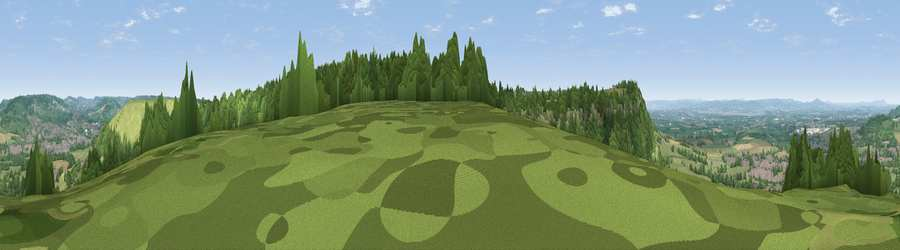

Viewpoint near Kings Stanley
#6268 in England · top 10% of its area beats it · near Kings Stanley · access?Where it is
The exact computed spot (SO 81862 02500). Click the marker for map links.
Public access: no public right of way or access land is recorded at this exact spot — it may be on private land. Computed from Natural England's CRoW access layer and OpenStreetMap rights of way — not the legal definitive map. Always verify locally.
The view, rendered

A 360° render of this exact spot computed from the terrain model, tree cover and land cover — summer colours, afternoon light, calibrated against photographs of famous viewpoints. Real trees, hedges and buildings will differ in detail.
The panorama
Grey silhouette: terrain skyline in each direction (720 bearings, Earth curvature and refraction included). Dashed green: skyline with trees (+15 m) and buildings (+8 m) as obstacles. Blue strip: how far the ground is visible on each bearing.
Where the view opens
Wedge length = distance to the farthest visible ground on that bearing (vegetation-aware). Rings at 10, 25 and 50 km.
What fills the view
44% grassland · 41% woodland · 8% built-up · 6% cropland
Angular shares of the visible panorama (visual magnitude), not map area. Landscape diversity 0.49 (0–1 Shannon).
Key numbers
More beautiful places nearby
The staircase of upgrades: each row has a higher view potential than everything closer. Driving times are estimates from straight-line distance, calibrated against real road routing — check an actual route before setting out.
| Place | Direction | Drive | Score |
|---|---|---|---|
| Viewpoint near Kings Stanley | WSW · 1 km | ~3 min | 71.5 |
| Viewpoint near Selsley | NE · 1 km | ~3 min | 73.5 |
| Viewpoint near Nympsfield | WSW · 2 km | ~5 min | 74.9 |
| Viewpoint near Nympsfield | WSW · 3 km | ~7 min | 77.5 |
| Viewpoint near Stinchcombe | WSW · 9 km | ~18 min | 79.4 |
| Viewpoint near Stinchcombe | WSW · 9 km | ~18 min | 80.5 |
| Nottingham Hill | NNE · 30 km | ~48 min | 80.9 |
| Chase End Hill | N · 33 km | ~51 min | 81.5 |
51.72093, -2.26396 · source: screening · position refined by local search. Computed location — check access rights before visiting.